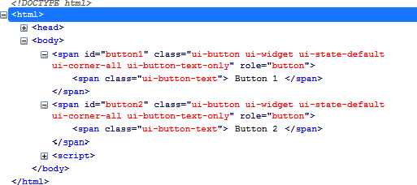
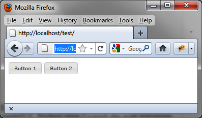

{% include JB/setup %}
{% raw %}
<div>
<div class="book" title="Formatting Content"><div class="book"><div class="book"><div class="book"><h1 class="title2"><a id="formatting_content-id3" class="calibre1"></a>Formatting Content</h1></div></div></div><p class="calibre7">Here, the HTML code that appears after the <code class="literal">button ()</code> instruction has been changed (<a class="ulink" href="ch05s02.html#html_generated_by_the_button_open_parent" title="Figure 5-2. HTML generated by the button () method">Figure 5-2</a>). This code was
    retrieved using the Firebug extension in Firefox.</p><div class="book"><div class="figure"><a id="html_generated_by_the_button_open_parent" class="firstname"></a><div class="book"><div class="book"><a id="I_mediaobject5_d1e3980" class="firstname"></a></div></div><p class="title4">Figure 5-2. HTML generated by the button () method</p></div></div><p class="calibre7">Again, as with other functions of jQuery UI, it is possible to use
    the CSS classes to customize the display of elements. For example, if we
    change the <code class="literal">ui-button</code> CSS class
    associated with <code class="literal">&lt;span&gt;</code> elements,
    we get a new appearance for the buttons (as shown in <a class="ulink" href="ch05s02.html#customized_buttons" title="Figure 5-3. Customized buttons">Figure 5-3</a>).</p><div class="book"><div class="figure"><a id="customized_buttons" class="firstname"></a><div class="book"><div class="book"><a id="I_mediaobject5_d1e3998" class="firstname"></a></div></div><p class="title4">Figure 5-3. Customized buttons</p></div></div><p class="calibre7">Modify these elements (shown in bold) in the HTML by adding a
    <code class="literal">&lt;style&gt;</code> tag:</p><a id="I_programlisting5_d1e4008" class="firstname"></a><pre class="programlisting">&lt;!DOCTYPE html&gt;
&lt;script src = jquery.js&gt;&lt;/script&gt;
&lt;script src = jqueryui/js/jquery-ui-1.8.16.custom.min.js&gt;&lt;/script&gt;

&lt;link rel=stylesheet type=text/css
      href=jqueryui/css/smoothness/jquery-ui-1.8.16.custom.css /&gt;

<span class="firstname"><strong class="userinput">&lt;style type=text/css&gt;</strong></span>
  <span class="firstname"><strong class="userinput">span.ui-button {</strong></span>
    <span class="firstname"><strong class="userinput">font-size : 10px;</strong></span>
  <span class="firstname"><strong class="userinput">}</strong></span>

<span class="firstname"><strong class="userinput">&lt;/style&gt;</strong></span>

&lt;span id="button1"&gt; Button 1 &lt;/span&gt;
&lt;span id="button2"&gt; Button 2 &lt;/span&gt;

&lt;script&gt;

$("#button1, #button2").button ();

&lt;/script&gt;</pre><p class="calibre7">This HTML code is identical, except that we added the <code class="literal">&lt;style&gt;</code> tag after the inclusion of jQuery
    UI styles. The addition of our own styles must be done after those of
    jQuery UI, otherwise our changes will be ignored.</p></div></div>

{% endraw %}

